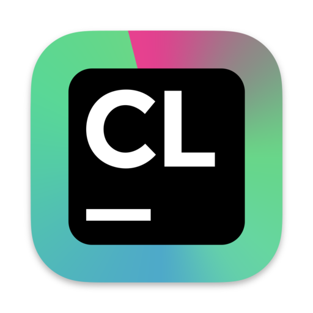
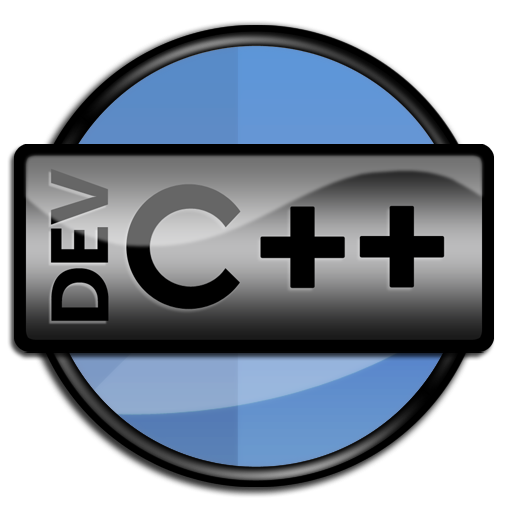

İdeas
Ana Sayfa
Hakkımda
İletişim
Game Coder
Seçimlerinize göre size en uygun bölüm Game Coder olarak belirlendi
Şimdi Game Coderiçin gerekli dilleri nasıl öğrenebileceğimize ve hangi araçları kullanacağımıza göz gezdirelim
Öğrenmen gereken diller şunlar
Kullanman gereken ideler


Üzerlerine tıklayarak inceleyebilirsiniz
Visual Studio Code (VS Code), geliştiriciler arasında popüler bir kod düzenleyici ve geliştirme ortamıdır.
İşte VS Code'un bazı faydaları:
Çapraz Platform Desteği: VS Code, Windows, macOS ve Linux gibi farklı işletim sistemlerinde çalışabilir.
Genişletilebilirlik: VS Code, birçok eklenti ve temayı destekler.
Hızlı ve Hafif: VS Code, hızlı başlatma süreleri ve düşük kaynak tüketimi ile tanınır.
Derin Entegrasyon: VS Code, Git gibi popüler sürüm kontrol sistemleriyle derin entegrasyon sağlar.
Kod Tamamlama ve Hata Kontrolü: VS Code, akıllı kod tamamlama özellikleri sunar.
Görsel Hata Ayıklama: VS Code, birçok programlama dili için görsel hata ayıklama özellikleri sunar.
Terminal Entegrasyonu: VS Code, içinde yerleşik bir terminal sunar.
Kendi web sitesinden Daha iyi şekilde inceleyebilirsiniz
CLion, JetBrains tarafından geliştirilen bir C++ entegre geliştirme ortamıdır ve C++ programları geliştirmek için kullanılır. CLion'un birçok faydası vardır:
Gelişmiş Kod Tamamlama
Hata Ayıklama ve Hata Bulma
Entegrasyon (derleyiciler ve yapılandırma araçlarıyla)
Refaktoring Araçları
Code Analysis (statik kod analizi)
Güçlü C++ Desteği
Uzantılar ve Özelleştirme
Kendi web sitesinden Daha iyi şekilde inceleyebilirsiniz
DevC++
Basit ve Kullanıcı Dostu Arayüz
Hızlı ve Hafif
Kolay Kurulum ve Kullanım
İçerik ve Kaynak Kod Yönetimi
Derleme ve Hata Ayıklama Yetenekleri
Geniş Kütüphane Desteği
Çoklu Platform Desteği
Kendi web sitesinden Daha iyi şekilde inceleyebilirsiniz